Candice Strongwater
Exhibitions
Public Programming
Publications
About
Candice Strongwater
is a is a New York-based curator and cultural producer. She holds a BA in Film Theory & Criticism from Muhlenberg College and is currently an MA candidate in Curatorial Studies at Bard.
EMAIL
INSTAGRAM
Close X
Throbbing_quivering_pulsing_beating
CCS Bard College, Co-curator, 2019
Gretchen Bender: So Much Deathless
Red Bull Arts New York, Associate Curator & Head of Public Programs, 2019
Mel Chin: Wake
No Longer Empty, Project Manager, 2018
Rammellzee: Racing for Thunder
Red Bull Arts New York, Associate Curator & Head of Public Programs, 2018
Sarah Meyohas: Clouds of Petals
Red Bull Arts New York, Associate Curator & Managing Editor, 2017
Ugo Rondinone: I <3 John Giorno
Red Bull Arts New York, Exhibition & Program Coordinator, 2017
The Casual Pleasure of Disappointment
Bjarne Melgaard, Babak Radboy
Red Bull Arts New York, Associate Curator & Managing Editor, 2017
Remix Re-memory
No Longer Empty, Curatorial Fellow, 2016
We All Love Your Life
George Henry Longly
Red Bull Arts New York, Exhibition & Programming Coordinator, 2016
BIO:DIP
Hayden Dunham / Nicolas Lobo
Red Bull Arts New York, Exhibition & Programming Coordinator, 2016
Scenario In The Shade
Justin Lowe, Jonah Freeman, Jennifer Herrema
Red Bull Arts New York, Exhibition & Programming Coordinator, 2015
Various Exhibitions
Tanya Leighton, Berlin, Gallery Administration, 2014–2015
Autotopia: Cars for a better future, curated by Herb Tam
Geometric Days, Curated by Papo Colo and Jeanette Ingberman with Herb Tam
Contemporary Slavery, Curated by Papo Colo and Jeanette Ingberman with Herb Tam
Exit Art, Curatorial Assistant, 2011
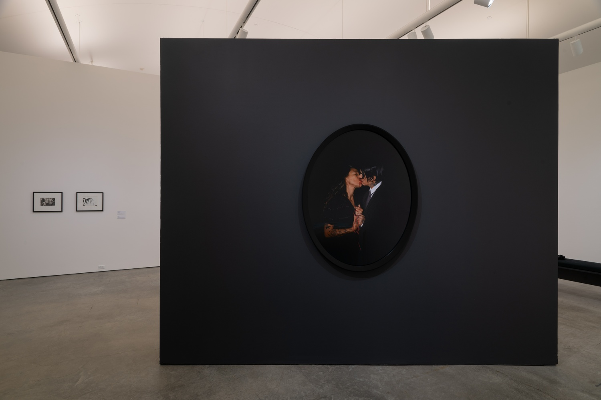
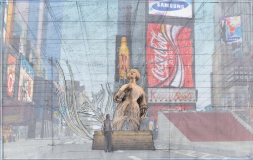 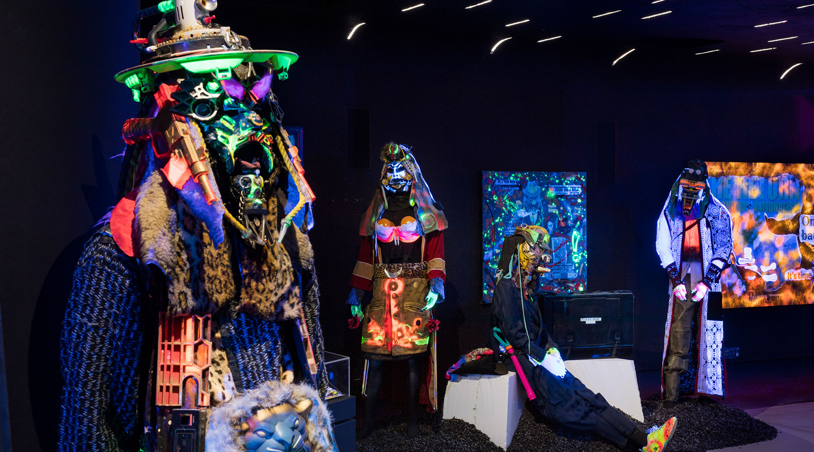 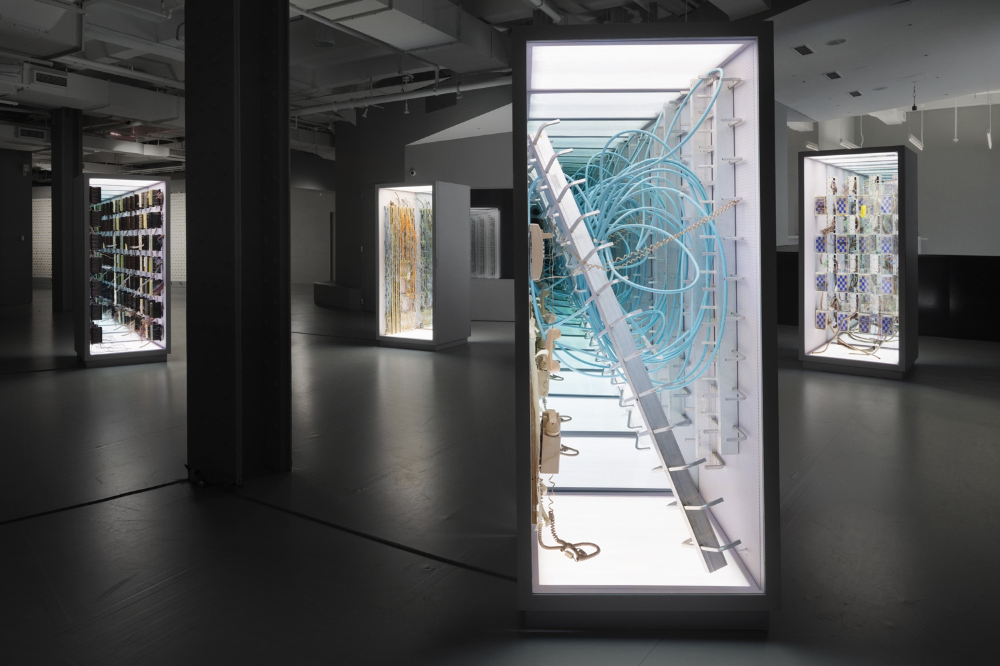 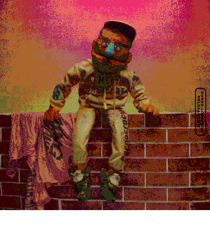
 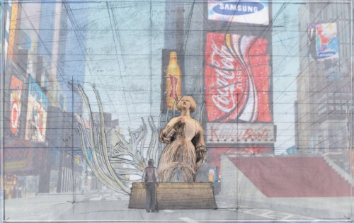
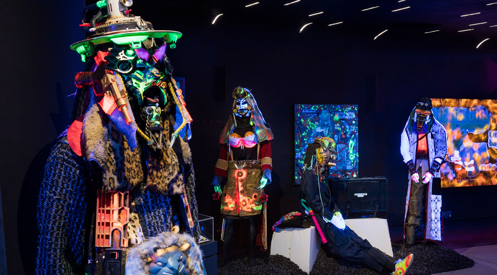
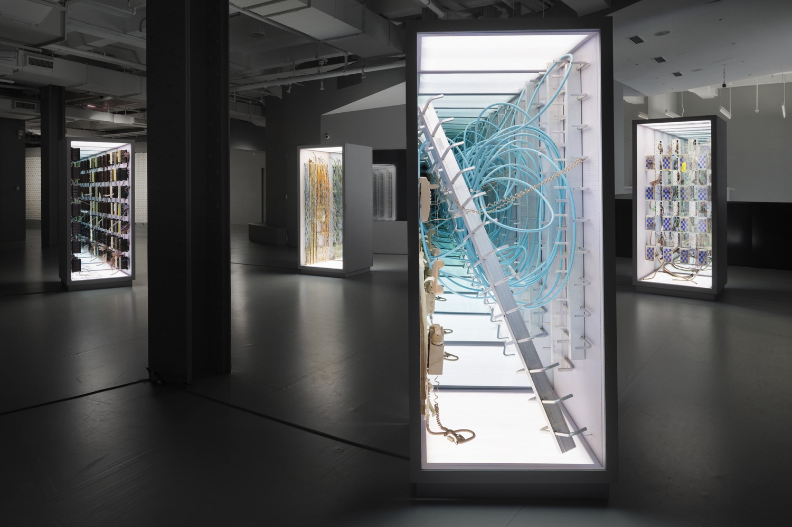
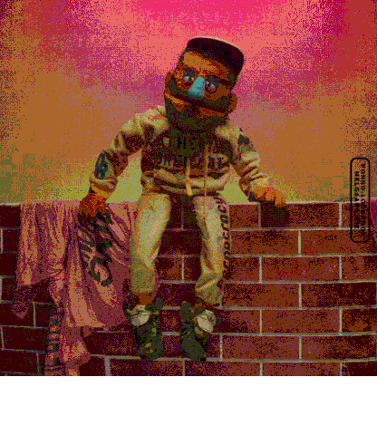
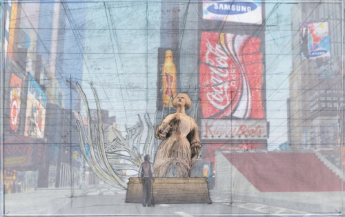
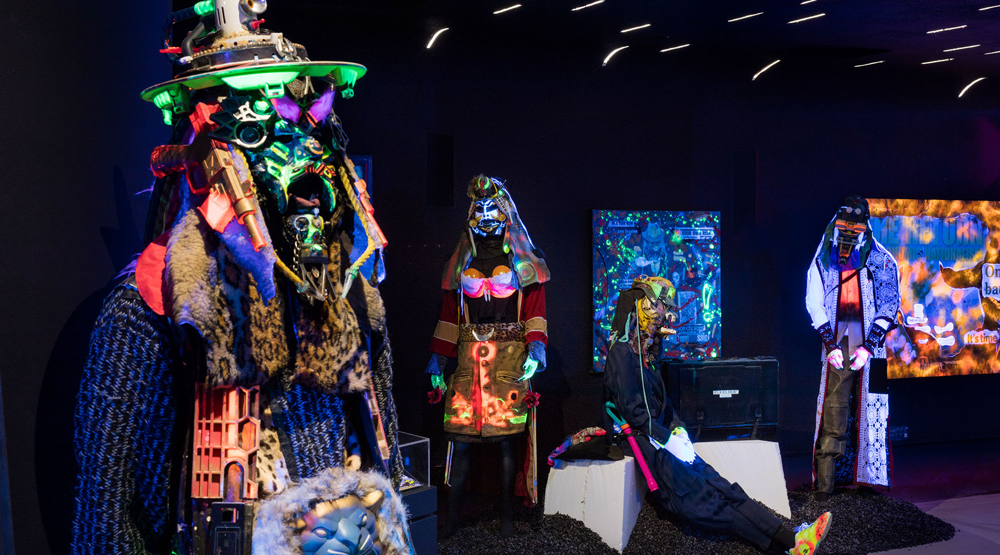
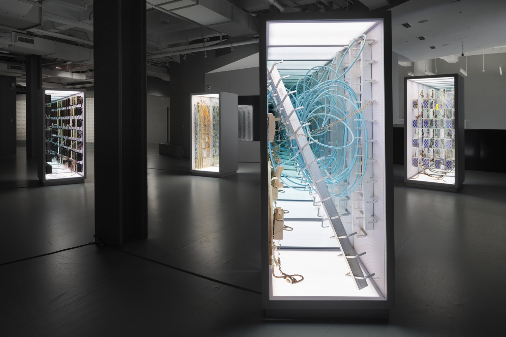
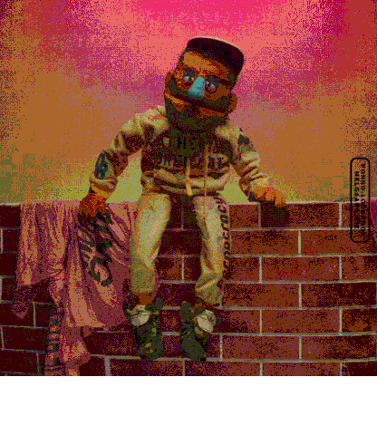